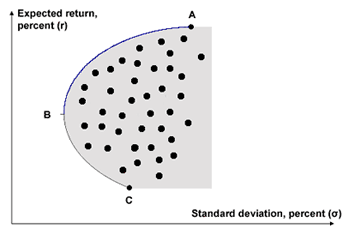

Getting Paid for Risk: The Efficient Frontier
Every portfolio is characterized by an asset allocation structure whether it has been proactively defined or not. Most often, the affluent clients’ portfolio asset allocation is the result of a series of unrelated purchases, resulting in a poorly structured portfolio. For example, one year an individual gets a bonus, which he invests in a Large Cap Equity Mutual Fund. Later, he receives an inheritance from his grandfather made up of shares in three blue-chip companies. The following year, amidst a market decline, he decides to invest his annual bonus in a bond fund, and so on. This is most certainly a case of a not-too-strategic approach to asset allocation. However, what most affluent clients do not understand is the real impact of this type of approach. This is where understanding the “Efficient Frontier” can be helpful.
The Efficient Frontier defines the historically highest returns an investor could generate at any given level of risk (defined as standard deviation, which is often represented by the Greek letter “σ”) over a specified time frame. This concept is depicted in the graphic below.
Click the icon to view an analysis of the chart.
